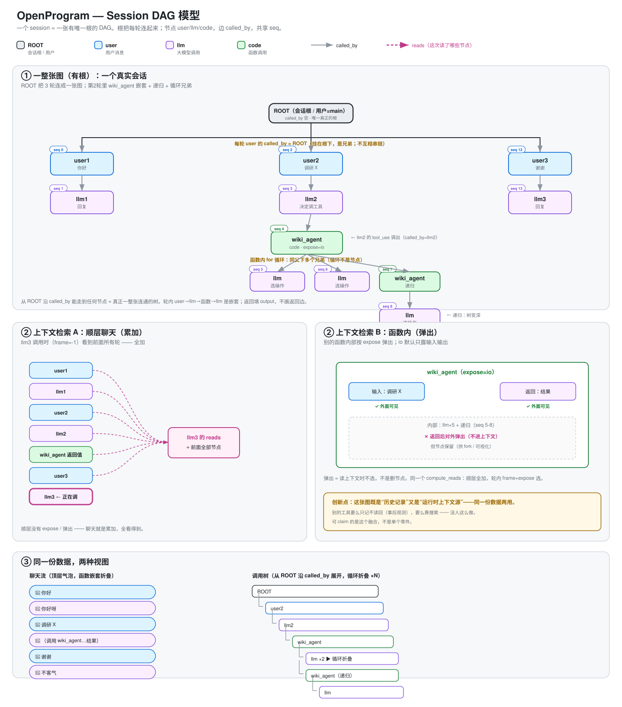

Agent 执行的 DAG 模型#
Status: decided · Created: 2026-06-19
一次 agent 会话里发生的每件事——用户提问、模型回复、函数调用、分支——如何记成 一张统一的图，以及这张图怎么用。
一个 session 就是一整张有向无环图：每个动作是一个节点，两条边把它们连起来。 这张图既是执行记录，也是喂给模型的上下文来源，还是界面上画出来的那棵树—— 同一份数据，三种用途。
可视化见
session-dag.svg；调用流程见agent-call-flow.svg。

第一部分 · 模型是什么#
1.1 一张有根的图#
整个 session = 一整张 DAG，有唯一的根。不切成多个独立片段，也不让任何一轮悬空。
- 根节点（ROOT）：每个会话一个根，代表"这个会话"。顶层 user 节点挂在它
下面——这是把多轮连成一整张图的汇总点。spawn 分支的根不挂 ROOT：它的
caller 指向发起它的节点（§2.3），连通性经由发起节点仍可达 ROOT，"一张连通图"
的不变量不破。（例外：跨会话 spawn 的分支根，caller 指向另一个会话的图，本会
话内挂 ROOT 并由渲染层标 ↗ 角标——见
dag-rendering.md图例。） - 共享 seq：整张图一套单调递增的
seq（全局时间序），排序的唯一依据。 - 顶层多轮：每轮 user 挂在 ROOT 下（互为兄弟），并用一条边指向上一轮的回复， 表达对话先后。
- 轮内嵌套：函数调用是子树，挂在调用它的节点下。
为什么必须是"一张图"且"有根"
上下文检索（3.1）靠"同一张图、同一套 seq"取历史。 如果把每轮切成独立的图，第 N 轮的模型就看不到前面几轮（跨图检索不到），对话连贯性 断裂。而要让多轮真正是"一张图"、不悬空，就需要一个根把每轮挂上去——否则每轮各自 成根 = 多张孤立的图，又断了。根 + 共享 seq 是"一张图"的硬约束。
业界做法（LangSmith / Datadog）把每次请求切成独立 trace、用 session 标签归类—— 因为它们是事后观测，上下文不读回。我们要读回，所以不能切。
1.2 节点#
所有节点只有三种 role，一种数据结构。同一个大模型调用永远是同一种 llm 节点， 不因"被用户触发"还是"被函数触发"而分裂。
| role | 是什么 |
|---|---|
user |
用户输入 |
llm |
一次大模型调用 |
code |
一次函数 / 工具调用 |
（ROOT 是一个特殊的 session 容器节点，无 input/output。）
Node:
id 唯一编号
seq 单调递增整数，全局时间序（排序唯一依据）
created_at wall-clock（给人看，不用于排序）
role user | llm | code ← 只决定渲染，不改变本质
name 模型 id / 函数名 / 用户名
input prompt / 函数参数 / None
output 回复 / 返回值 / 用户文本
status running | success | error | cancelled
caller 谁调出我（子调用父 id）；顶层节点 = ROOT
predecessor 聊天里我前面是谁（对话链父 id）；首条 user 为空
attributes 元信息（token / model / source / expose …）
reads 这次调用读了哪些节点（渲染上下文用，不是结构边）
1.3 两条边#
一个节点有两种父关系，各用一条边，互不干扰：
| 边 | 字段 | 含义 | 谁有它 |
|---|---|---|---|
| 子调用边 | caller |
谁调用了我执行 | 所有节点（顶层 = ROOT） |
| 对话链边 | predecessor |
聊天顺序上我接在谁后面 | user / llm（首条 user 为空） |
为什么两条都要——分支必须靠 predecessor 区分。 用户 retry 一句话，同一位置
冒出两个孩子，光靠 seq（时间）排不出"哪个孩子接哪条分支线"，必须有一条明确的
"我接在谁后面"的边。只有 caller + seq 的单边模型做不了分支。
- 沿
caller从 ROOT 能走到任何节点（一整张连通图）。 - 沿
predecessor能还原聊天顺序、区分分支（fork = 同一个 predecessor 有多个孩子）。
这两件事正交： "挂在同一个根"（caller=ROOT，不悬空）和"对话先后"（predecessor 串顺序）各管各的。挂同一个根 ≠ 串成一条链。
三种 role 各自的两条边
| role | caller（子调用父） | predecessor（对话链父） | input | output |
|---|---|---|---|---|
| (ROOT) | 空 | 空 | None | None（容器） |
| user | ROOT | 上一轮的 llm 回复（首条为空） | None | 用户文本 |
| llm | 触发它的节点（顶层=本轮 user；函数内=那个 code 节点） | 本轮 user | system（可选） | 模型回复 |
| code | 调它的节点（模型 tool_use=那个 llm；手动调=ROOT） | 当前分支 head（手动调时） | 函数参数 | 返回值 |
循环（for/while）不占节点——执行轨迹不记代码结构。循环跑 N 次 = 同一父下 N 个 兄弟（按 seq 排）；可视化时折叠成 ×N（纯显示，数据仍是 N 个节点）。
第二部分 · 边怎么用#
多轮、分支、跨分支协作，都是上面那两条边的不同用法——没有第三条边、没有特殊结构。
2.1 多轮对话#
每轮 user 的 caller 都是 ROOT（挂根，互为兄弟）；predecessor 指向上一轮的回复
（对话顺序）。靠 predecessor 还原先后，靠 seq 排时间。
ROOT
├ user1 seq0 caller=ROOT pred=空
│ └ llm1 seq1 caller=user1 pred=user1
├ user2 seq2 caller=ROOT pred=llm1 user2 接在第1轮回复后
│ └ llm2 seq3 caller=user2 pred=user2
├ user3 seq4 caller=ROOT pred=llm2
│ └ llm3 seq5 caller=user3 pred=user3
2.2 分支（fork）#
分支 = 同一个位置的另一种可能（平行世界）。分支节点的 predecessor 和被替换的 节点完全一样——同一个 predecessor 有了多个孩子，就是 fork。
| 场景 | 被替换节点 | 分支节点 | 共享的边 |
|---|---|---|---|
| 用户重发消息 | user2（pred=llm1） | user2'（pred=llm1） | predecessor=llm1 |
| LLM 重试 | llm1（pred=user1） | llm1'（pred=user1） | predecessor=user1 |
| 工具重试 | code（caller=llm1） | code'（caller=llm1） | caller=llm1 |
不需要特殊处理——分支节点就是普通节点，跟被替换的节点共享同一个 predecessor （工具重试共享 caller）。哪个是当前活跃的，靠 HEAD 指针。可视化里分支往右偏移到 独立列，虚线连到兄弟。
2.3 跨分支协作（message_branch）#
模型用 message_branch 派一条子分支去干活、跑完把结果回送。子分支是一条并列的
独立分支，不并回主线。它靠的还是那两条边：
派生子分支的根节点
派生分支的第一个节点必须标出"我从哪岔出来的"：
| 边 | 设什么 | 语义 |
|---|---|---|
caller |
发起 message_branch 的那个节点 | 这条分支被那个节点派生（spawn edge） |
predecessor |
空 | 它是新链的头；分支内后续节点才用 predecessor 往下接 |
caller 不能空。 get_branch 从某个 head 往回走时用 predecessor || caller 找
上一个节点；走到分支根、两者都空，它只能靠 seq 猜"上一个顶层节点"并硬缝过去，于是
把两条并列的独立分支缝成一条链，界面就把所有分支的消息全铺出来（乱套）。给分支
根设上 caller=发起点，回走到它、发现 caller 指向的是另一条分支 → 就地停住，这条分支
自成一链。
caller 由框架自动填，模型不碰。 message_branch 派分支时把发起节点 id 传进
TurnRequest，dispatcher 建分支根节点时 caller = 该 id。模型只调
message_branch(message, target="new")。
回送节点
子分支答完，回复作为一个 user 节点喂回发起方。回送节点的 predecessor 必须是 发起点（caller），不是发起方 session 的 head_id。
用 head_id 会把回流拼到主线尾巴——发起方等待期间若又聊了别的，回送会莫名接在那后面， 看不出这是某次派生的回流。用发起点，回送就是发起方分支的自然延续（和函数调用的 attach 指针同一落位）。
第三部分 · 这张图怎么用#
同一张图，三个操作：喂给模型、存下来、画出来。
3.1 喂模型（上下文检索）#
render_context(graph, head_seq, frame_entry_seq, render_range) 在整张图上按
seq + frame + expose 选出这次调用能看到哪些节点：
- 顶层聊天（frame=-1）：所有 in-frame 节点全可见（累加）——前面所有轮的对话都 喂进去。
- 轮内函数（frame=该 code 节点的 seq）：pre-frame（到根的历史）+ in-frame（自己
内部进展）可见；别的函数内部按
expose弹出（默认只露输入输出）。
顶层 = 全加（本来就该平），轮内 = frame+expose 层级选择。 同一个 render_context， 两层各取所需。
3.2 存（持久化）#
一次函数调用在存储里只有 code 节点（及其内部 llm/code 子节点），没有任何 placeholder / anchor / 辅助行。SessionStore 里的 code 子树是唯一真相源，三条数据 流都是它的投影：
| 数据流 | 怎么走 |
|---|---|
| 持久化（权威） | @agentic_function 执行返回时写成 code 节点，caller 指向真实调用者 |
| 实时（投影） | 执行期间 live_progress 每 ~1.2s 从 SessionStore 重建子树、广播 tree_update 驱动前端卡片 |
| 刷新（投影） | 刷新时 handle_load_session + conv-mapper 从同一份 code 节点重建同一张卡片 |
三者对同一次调用必须产出一致的视图（同 id、同形状、同输出）。
caller 由调用方决定： 用户手动调 → caller=ROOT；模型 tool_use → caller=该 llm
节点；函数内部调 → caller=外层 code 节点（_call_id ContextVar 透传）。
head_id 永不悬空： 函数调用完成后 head 推进到真实的 code 节点 id，绝不指向 不存在的 placeholder，否则刷新渲染空白。
函数体在独立子进程里跑（spawn 全新解释器，非 fork——父 worker 已加载 PyTorch， fork 会 SIGSEGV）。含义：改完函数调用相关代码，
openprogram worker restart是 充分且必要的（父 worker 长驻，不重启用旧模块）。
3.3 画（可视化）#
画法的权威规范在
dag-rendering.md（布局 · 连线 · 图例 · 默认可见性）。 本节只留语义要点：
DAG viewport（右侧小地图）按 tree-indent 渲染：
- tier（水平列）分两层：对话层按 role 固定（ROOT=0，user=1——含 spawn
分支根与回送节点，llm/merge=2）；执行层按调用深度（code=3，更深子调用 =
caller's tier + 1）。spawn 根的 caller 指向深节点，但它是对话层 user，
tier 仍为 1——caller 只决定 spawn 边从哪画来，不决定它的缩进
（裁决记录见
dag-rendering.md第一节）。 - depth（垂直行）按 seq DFS 排，fork siblings 对齐到同一行。
- lane（分支列）：主干 lane=0，fork siblings 各占独立 lane。
- 连线：user 从 ROOT 列画、llm 从 user 画、code 从 llm 画；fork siblings 之间 虚线动画；分支内部按 parent→child 画。
- 折叠只收子调用（caller 关系），不收对话链后续 turn。
两轮对话： 有 fork/retry： 有工具调用：
◇ ROOT ◇ ROOT ◇ ROOT
├ ○ user1 ├ ○ user1 ┈┈ ○ user1' ├ ○ user1
│ └ △ llm1 │ └ △ llm1 └ △ llm1' │ └ △ llm1
├ ○ user2 ├ ○ user2 │ └ ■ code(web_search)
│ └ △ llm2 │ └ △ llm2
两种视图，同一份数据： 聊天流（顶层 user+llm 按 seq，函数嵌套折叠）/ 调用树 （沿 caller 全展开，循环兄弟折叠 ×N）。
相关文件#
openprogram/context/nodes.py— Node + render_context（图的检索）openprogram/context/render.py— render_dag_messages（图 → 模型消息）openprogram/agent/dispatcher/__init__.py— 写节点入口（caller / predecessor 落地）openprogram/store/session/session_store.py— get_branch / 存储openprogram/agentic_programming/function.py— 函数调用写 code 节点